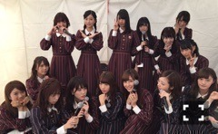

| 2016/11 05 Sat | 久しぶりの富士急！ |
ちはるーむへようこそ。
今日は富士急ハイランドにて
『乃木坂46の「の」』の
公開収録&ミニライブでした( ¨̮ )
来てくださった皆さんありがとうございました！
近いステージだったので
皆さんの顔がよく見れましたよ◎
タオルを掲げてくれたり
名前を呼んでくれたり、
とっても嬉しかった♡
収録はコーナーや、ポーズ(!?)等
色々なことをし、みんなで楽しんでできました！
放送を楽しみにしていてください\( ˆ ˆ )/

みんな思い思いのポーズ。
優里はマイクに疑問を持ってるポーズで
愛未と純奈はアンニュイポーズ。
真洋はそれを笑って見ていて、
私はただただマイクと微笑んでみた。
まあやは○作っているし
琴子は✖️作っている。
みんな面白い！！
ミニライブは
13日の金曜日、
シークレットグラフィティー、
ブランコ(フルサイズ)、
制服のマネキン、
おいでシャンプーの5曲を披露しました！
富士山の麓なので寒いだろうと覚悟していたら
ライブが直射日光を浴びながらで
暑くなっちゃって汗かいちゃった...笑
この時期の外で暑い！と思うなんて( ｣´0｀)｣
盛り上がってくださって嬉しかった♪
収録前に、てんてこまいに乗ったの！
よーし回るぞ〜！って
意気込んで行ったら、
思ってたよりも操縦が難しくて
一回も回れなかった( ˟_˟ )
悔しかった( ˟_˟ )
回れる方にコツ聞きたい！！笑
いつかまたリベンジしたいです。
-------------------------♡
◎ChihaFood◎
今日は私の大好きな飲み物を
紹介します！
どこのお店の○○とかじゃないんだけど...
バナナスムージー♡
飲みかけだけど...
はいっ！あげる！(﹡ˆ ˆ﹡)
スムージー屋さんに行った時や
メニューにバナナスムージーを見つけたら
必ず頼んでしまう。
お腹にもたまるし、
飲みやすいし、
体に悪いものは入ってないし、
何より甘くて美味しい！
家にはミキサーもジューサーもないので
作ることができないのが悲しい(> <)
多分、家にあったら
毎日飲んじゃうんだろうな〜♪ってくらい
大好きなんだ！

★好きな飲み物リスト
・ジンジャーエール(甘口)
・トマトジュース
・飲むヨーグルト
・タピオカミルクティー
・バナナスムージー(←new!)
みんな覚えておいてね◎
-------------------------♡
♬ ChihaMusic
「才悩人応援歌」BUMP OF CHICKENさん
中学生の頃から、この曲を聴くと
胸に何かがグッと刺さってくる。
多分歌詞が図星なんだと思う。
心の奥で思ってることや考えてる事を
この曲が代弁してくれているから。
"隣人は立派 将来有望 才能人
そんな奴がさぁ 頑張れってさぁ
怠けて見えたかい
そう聞いたら頷くかい
死にたくなるよ 生きていたいよ"
このもどかしさが苦しい。
苦しいけど悔しい。
それが私を奮い立たせてくれる。
明日は名古屋で個別握手会！
15thはラストの握手会。
あっという間に終わってしまう。
来てくれる皆さん楽しみましょう♡
おやすみ〜
斎藤ちはる
コメント(219)
2016/11/05 23:40